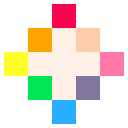
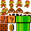

Programozás
Ezen az oldalon programozással kapcsolatos oktatási anyagokat találsz.
Tananyagok
| Micsoda | Link vagy fájl |
|---|---|
| Tankönyvben |
 nkp Programozás nkp Programozás
|
| Okosgyűjtemény |
nkp Programozás - Alapok
|
|
|
www.python.org
|
| Python W3School |
www.w3schools.com/python/
|
|
|
www.online-python.com
|
|  Pico 8 Education |
www.pico-8-edu.com
|
|
tic80.com/create
|
|
|
makecode.microbit.org
|
|
|
scratch.mit.edu
|
|
| Microbit prezi |
 microbit_feladatok_középsuli.pptx microbit_feladatok_középsuli.pptx
|
| Bevezetés a programozás világába |
Bevezetés a Programozás Világába.pptx
|
| Üdvözlés 3 féle nyelven |
 welcome.html welcome.html welcome.xlsm welcome.xlsmwelcome.py |
| Programozási nyelvek megoszlása |
Feladatok
| Feladat | Leírás 🔒 | Forrás fájl 🔒 |
|---|---|---|
| Egyszerű feladatok |
 prog_feladatok.pdf prog_feladatok.pdf
|
nope.py |
Godot
| Feladat | Forrás fájlok |
|---|---|
| Godot 4.4.1 telepítése |
godot_telepites.pdf
|
| Mario ugrálós |
 |
Példaprogramok
Sima egyszerű Helló Világ
# Helló Világ, mindig ezzel kezdünk :-D
print("Hello Világ")Üdvözlő
# Üdvözlés
nev = input("Kérlek, add meg a neved:")
print("Üdvözöllek, ", nev, "!")Feltételes elágazások (if-then-else)
# Bekérjük, hogy mennyi csokit evett a felhasználó
csoki = int(input("Mennyi csokit ettél ma? (0-10 közötti szám): "))
# Feltételes elágazás
if csoki == 0:
print("Hős vagy! Csak nem diétázol? 🦸")
elif 1 <= csoki <= 3:
print("Jól van, még belefér egy kis öröm. 😊")
elif 4 <= csoki <= 6:
print("Na na, vigyázz, nehogy elszállj a cukortól! 🚀")
elif 7 <= csoki <= 9:
print("Biztos vagy benne, hogy nem egy csokigyárban dolgozol? 🏭")
else:
print("10 csoki? Gratulálok, te vagy a Csoki Császár! 👑")Feltételes elágazások (match-case, switch-case)
# Bekérjük, hogy mennyi csokit evett a felhasználó
csoki = int(input("Mennyi csokit ettél ma? (0-10 közötti szám): "))
# Match-case szerkezet
match csoki:
case 0:
print("Hős vagy! Csak nem diétázol? 🦸")
case 1 | 2 | 3: # 1, 2 vagy 3 csoki
print("Jól van, még belefér egy kis öröm. 😊")
case 4 | 5 | 6: # 4, 5 vagy 6 csoki
print("Na na, vigyázz, nehogy elszállj a cukortól! 🚀")
case 7 | 8 | 9: # 7, 8 vagy 9 csoki
print("Biztos vagy benne, hogy nem egy csokigyárban dolgozol? 🏭")
case 10: # Pontosan 10 csoki
print("10 csoki? Gratulálok, te vagy a Csoki Császár! 👑")
case _: # Minden más eset (pl. 10-nél több)
print("Hát, te már nem is ember vagy, hanem egy csokigép! 🤖")Feltételes elágazások (egymásba ágyazott, nested)
# Bekérjük a képernyő előtt töltött időt és a testmozgás mennyiségét
percek = int(input("Mennyi időt töltöttél ma a képernyő előtt? (percben): "))
mozgas = int(input("Mennyi időt mozogtál ma? (percben): "))
# Egymásba ágyazott if-then-else elágazások
if percek > 300: # Több mint 5 óra képernyőidő
if mozgas == 0:
print("5 óra képernyőidő és 0 perc mozgás? Te egy igazi bújócska vagy! 🦥")
elif mozgas < 30:
print("5 óra képernyőidő és kevés mozgás? Na, ezt még javítani kellene! 🏃♂️")
else:
print("5 óra képernyőidő, de legalább mozogtál! Nem vagy veszve! 😅")
elif 120 < percek <= 300: # 2-5 óra képernyőidő
if mozgas == 0:
print("2-5 óra képernyőidő és 0 perc mozgás? Na, ez már gyanús! 🧐")
elif mozgas < 30:
print("2-5 óra képernyőidő és kevés mozgás? Talán egy kis séta jót tenne! 🚶♀️")
else:
print("2-5 óra képernyőidő, de legalább mozogtál! Nem rossz! 👍")
else: # Kevesebb mint 2 óra képernyőidő
if mozgas == 0:
print("Kevesebb mint 2 óra képernyőidő, de 0 perc mozgás? Miért nem mozogsz? 🤔")
elif mozgas < 30:
print("Kevesebb mint 2 óra képernyőidő és kevés mozgás? Talán egy kis tornát beiktathatnál! 🧘♂️")
else:
print("Kevesebb mint 2 óra képernyőidő és sokat mozogtál? Te vagy a példakép! 🌟")Ciklusok
A ciklusok alapvető eszközei a programozásnak, amelyek lehetővé teszik, hogy egy adott kódrészletet többször is végrehajtsunk anélkül, hogy újra és újra le kellene írnunk ugyanazt a kódot. A ciklusok használata nélkülözhetetlen olyan feladatoknál, ahol ismétlődő műveleteket kell végrehajtani, például adatok feldolgozása, listák bejárása vagy egy játék fő ciklusának vezérlése.
- A
forciklus egy ismert számú ismétléshez használatos, például egy lista vagy egy tartomány elemeinek bejárásához. - A
whileciklus addig fut, amíg egy adott feltétel igaz. Hasznos, ha nem tudjuk előre, hogy hányszor kell ismételni a kódot. - Ciklusok egymásba ágyazásával bonyolultabb feladatokat is megoldhatunk, például egy mátrix bejárását.
for i in range(3): # Külső ciklus for j in range(3): # Belső ciklus print(f"({i}, {j})") - Ha a ciklus feltétele soha nem válik hamissá, akkor a ciklus végtelenül fut. Például:
while True: print("Végtelen ciklus!") - Ciklus vezérlés
breakutasítással: Kilép a ciklusból, még akkor is, ha a feltétel még igaz.for i in range(10): if i == 5: break # Kilép, ha i eléri az 5-öt print(i) - Ciklus vezérlés
continueutasítással: Kihagyja a ciklus aktuális iterációját, és a következőre ugrik.for i in range(10): if i % 2 == 0: continue # Páros számok kihagyása print(i)
# 1. For ciklus 1-től 10-ig
print("For ciklus 1-től 10-ig:")
for i in range(1, 11): # range(1, 11) -> 1-től 10-ig
print(i, end=" ")
print("\n") # Új sor
# 2. While ciklus 1-től 10-ig
print("While ciklus 1-től 10-ig:")
i = 1
while i <= 10:
print(i, end=" ")
i += 1 # i növelése 1-gyel
print("\n") # Új sor
# 3. For ciklus 10-től 1-ig
print("For ciklus 10-től 1-ig:")
for i in range(10, 0, -1): # range(10, 0, -1) -> 10-től 1-ig, -1-es lépéssel
print(i, end=" ")
print("\n") # Új sor
# 4. While ciklus 10-től 1-ig
print("While ciklus 10-től 1-ig:")
i = 10
while i >= 1:
print(i, end=" ")
i -= 1 # i csökkentése 1-gyel
print("\n") # Új sorPrímszámok listázása 1000-ig
Ez a program, amely kilistázza az összes prímszámot 1000-ig. A program a prímszámok megtalálására a klasszikus "Sieve of Eratosthenes" (Eratoszthenész szitája) algoritmust használja, amely hatékony és könnyen megvalósítható:
Magyarázat:
- Eratoszthenész szitája:
- A program először létrehoz egy
is_primelistát, amelyben minden számról azt tárolja, hogy prím-e (kezdetben minden szám prímnek van jelölve, kivéve a 0-t és az 1-et). - Ezután a program végigmegy a számokon 2-től a 1000 négyzetgyökéig.
Ha egy szám prím (
[number] == True), akkor a szám összes többszörösét kizárja a prímek közül (is_prime[multiple] = False). - Prímszámok kigyűjtése:
- A végén a program összegyűjti azokat a számokat, amelyekre
is_prime[number]még mindig True. - Eredmény kiírása:
- A program kiírja az összes prímszámot 1000-ig.
def primes_up_to_1000():
# Egy lista, amely jelzi, hogy egy szám prím-e (True/False)
is_prime = [True] * 1001 # 0-tól 1000-ig
is_prime[0] = is_prime[1] = False # 0 és 1 nem prímszámok
# Eratoszthenész szitája
for number in range(2, int(1000**0.5) + 1): # Csak a négyzetgyökig megyünk
if is_prime[number]: # Ha a szám prím
for multiple in range(number * number, 1001, number): # A többszöröseit kizárjuk
is_prime[multiple] = False
# Prímszámok kigyűjtése
primes = [number for number, prime in enumerate(is_prime) if prime]
return primes
# Prímszámok listázása
primes = primes_up_to_1000()
print("Prímszámok 1000-ig:")
print(primes)Számkitalálós játék
Ebben a játékban a gép gondol egy számra 1 és 100 között. A játékosnak ezt a számot kell kitalálni.
# Számkitalálós játék
import random
szam = random.randint(1, 100)
tipp = int(input("Tippelj egy számot 1 és 100 között: "))
if tipp == szam:
print("Gratulálok, eltaláltad!")
else:
print(f"Sajnos nem talált, a szám {szam} volt.")Ez a változat egy kicsit interaktívabb és szórakoztatóbb. Itt addig tart a játék, amíg a játék ki nem találja a gép által gondolt számot.
import random
# Véletlenszerű szám generálása 1 és 100 között
szam = random.randint(1, 100)
tipp = None # Kezdetben nincs tipp
print("Üdvözöllek a számkitalálós játékban!")
print("Gondoltam egy számra 1 és 100 között. Próbáld meg kitalálni!")
# Addig fut a ciklus, amíg a játékos el nem találja a számot
while tipp != szam:
# Játékos tippjének bekérése
tipp = int(input("Add meg a tipped: "))
# Tipp ellenőrzése
if tipp < szam:
print("A tipped kisebb, mint a gondolt szám. Próbáld újra!")
elif tipp > szam:
print("A tipped nagyobb, mint a gondolt szám. Próbáld újra!")
else:
print(f"Gratulálok, eltaláltad! A gondolt szám {szam} volt.")Kő-Papír-Olló játék
Ez egy klasszikus játék, ahol a játékos a gép ellen játszik.
import random
# Lehetséges választások
valasztasok = ["kő", "papír", "olló"]
print("Üdvözöllek a Kő-Papír-Olló játékban!")
jatekos_valasztasa = input("Válassz: kő, papír vagy olló: ").lower()
gep_valasztasa = random.choice(valasztasok)
print(f"A gép választása: {gep_valasztasa}")
# Eredmény meghatározása
if jatekos_valasztasa == gep_valasztasa:
print("Döntetlen!")
elif (jatekos_valasztasa == "kő" and gep_valasztasa == "olló") or \
(jatekos_valasztasa == "papír" and gep_valasztasa == "kő") or \
(jatekos_valasztasa == "olló" and gep_valasztasa == "papír"):
print("Nyertél!")
else:
print("Vesztettél!")Számológép
Egy egyszerű számológép, amely alapműveleteket végez.
print("Egyszerű számológép")
szam1 = float(input("Add meg az első számot: "))
muvelet = input("Válassz műveletet (+, -, *, /): ")
szam2 = float(input("Add meg a második számot: "))
if muvelet == "+":
eredmeny = szam1 + szam2
elif muvelet == "-":
eredmeny = szam1 - szam2
elif muvelet == "*":
eredmeny = szam1 * szam2
elif muvelet == "/":
if szam2 != 0:
eredmeny = szam1 / szam2
else:
eredmeny = "Hiba: Nullával való osztás!"
else:
eredmeny = "Érvénytelen művelet!"
print(f"Eredmény: {eredmeny}")Kalandjáték
A szöveges kalandjátékok (angolul text-based adventure games) az 1970-es és 1980-as években váltak népszerűvé, mivel ekkor még nem voltak elterjedtek a grafikus felületek, és a számítógépek korlátozott teljesítménye miatt a szöveges alapú játékok ideális megoldást kínáltak. Ezek a játékok a képzeletre támaszkodtak: a játékosok szöveges parancsokkal (pl. "menj északra", "vedd fel a kulcsot") irányították a karakterüket, és a játék szöveges leírásokon keresztül mesélte el a történetet. A szöveges kalandjátékok népszerűségét az adta, hogy a játékosok aktívan részt vettek a történetben, és a döntéseik befolyásolták a játék kimenetelét. Emellett ezek a játékok könnyen tervezhetők és megvalósíthatók voltak korlátozott erőforrások mellett is.
- A játék egy szöveges kaland, ahol a felhasználó döntései befolyásolják a történet menetét.
- A játékban a felhasználónak választania kell különböző útvonalak vagy cselekvések között.
- Minden választás más kimenetelhez vezet.

# Üdvözlés és történet bevezetése
print("Üdvözöllek a kalandjátékban!")
print("Egy sötét erdőben találod magad. Két út áll előtted: balra és jobbra.")
# Első választás
valasztas = input("Melyik utat választod? (balra/jobbra): ").lower()
# Történet folytatása az első választás alapján
if valasztas == "balra":
print("\nBalra mentél, és egy folyóhoz értél.")
print("Átúszol a folyón, vagy keresel egy hidat?")
valasztas2 = input("Válassz: (uszás/híd): ").lower()
if valasztas2 == "uszás":
print("\nÁtúsztál a folyón, de egy veszélyes állat megtámadott. Vesztettél!")
elif valasztas2 == "híd":
print("\nMegtaláltad a hidat, és biztonságosan átjutottál. Nyertél!")
else:
print("\nÉrvénytelen választás. A játék véget ért.")
elif valasztas == "jobbra":
print("\nJobbra mentél, és egy sötét barlanghoz értél.")
print("Belemész a barlangba, vagy visszafordulsz?")
valasztas2 = input("Válassz: (barlang/vissza): ").lower()
if valasztas2 == "barlang":
print("\nA barlangban egy kincset találtál. Nyertél!")
elif valasztas2 == "vissza":
print("\nVisszafordultál, de az erdőben eltévedtél. Vesztettél!")
else:
print("\nÉrvénytelen választás. A játék véget ért.")
else:
print("\nÉrvénytelen választás. A játék véget ért.")Kalandjáték dictionaryvel: Ez bővíthetőbb, ugyanakkor a kód kicsit bonyolultabb 😨
# A helyszínek és az útvonalak dictionary-ben tárolva
helyszinek = {
"erdő": {
"leírás": "Egy sötét erdőben találod magad. Két út áll előtted: balra és jobbra.",
"lehetőségek": {"balra": "folyó", "jobbra": "barlang"}
},
"folyó": {
"leírás": "Egy folyóhoz értél. Átúszol a folyón, vagy keresel egy hidat?",
"lehetőségek": {"uszás": "vesztes", "híd": "nyertes"}
},
"barlang": {
"leírás": "Egy sötét barlanghoz értél. Belemész a barlangba, vagy visszafordulsz?",
"lehetőségek": {"barlang": "nyertes", "vissza": "vesztes"}
},
"nyertes": {
"leírás": "Gratulálok, nyertél! A kaland sikeresen véget ért.",
"lehetőségek": {}
},
"vesztes": {
"leírás": "Sajnos vesztettél. A kaland véget ért.",
"lehetőségek": {}
}
}
# Kezdő helyszín
jelenlegi_hely = "erdő"
# Játék ciklus
while True:
# Helyszín leírásának kiírása
print(helyszinek[jelenlegi_hely]["leírás"])
# Ha nincsenek további lehetőségek, a játék véget ér
if not helyszinek[jelenlegi_hely]["lehetőségek"]:
break
# Lehetőségek kiírása
print("Lehetőségeid:")
for lehetoseg, cel in helyszinek[jelenlegi_hely]["lehetőségek"].items():
print(f"- {lehetoseg}")
# Felhasználó választása
valasztas = input("Mit választasz? ").lower()
# Ellenőrizzük, hogy a választás érvényes-e
if valasztas in helyszinek[jelenlegi_hely]["lehetőségek"]:
jelenlegi_hely = helyszinek[jelenlegi_hely]["lehetőségek"][valasztas]
else:
print("Érvénytelen választás. Próbáld újra!")Piros kör 🔴
Az alábbi programokaban megnézzük a Python grafikai és animációs képességeit pár egyszerű példán keresztül.
# Piros kör a teknöc könyvtár felhasználásával
import turtle
# Turtle beállítása
t = turtle.Turtle()
t.shape("turtle") # Teknőc alak beállítása
t.color("red") # A toll színének beállítása pirosra
# Kör rajzolása
t.begin_fill() # Kitöltés kezdése
t.circle(100) # 100 pixel sugarú kör rajzolása
t.end_fill() # Kitöltés befejezése
# Ablak bezárása kattintásra
turtle.done()
Piros kör 🔴 tkinter könyvtárral
# Piros kör a tkinter könyvtár felhasználásával
import tkinter as tk
# Fő ablak létrehozása
root = tk.Tk()
root.title("Piros kör") # Az ablak címe
# Vászon létrehozása
canvas = tk.Canvas(root, width=200, height=200, bg="white")
canvas.pack()
# Kör rajzolása
canvas.create_oval(50, 50, 150, 150, fill="red", outline="red") # (x1, y1, x2, y2) határoló téglalap
# Fő ciklus indítása
root.mainloop()
Interaktív kör 🔴 🔵 🟢 🟡
# Interaktív kör a tkinter könyvtár felhasználásával
import tkinter as tk
from tkinter import simpledialog
# Fő ablak létrehozása
root = tk.Tk()
root.title("Piros kör")
# Vászon létrehozása
canvas = tk.Canvas(root, width=200, height=200, bg="white")
canvas.pack()
# Kör méretének és színének bekérése
sugar = simpledialog.askinteger("Kör sugara", "Add meg a kör sugarát (pixelben):", minvalue=10, maxvalue=100)
szin = simpledialog.askstring("Kör színe", "Add meg a kör színét (pl. red, blue, green):")
# Kör rajzolása
x1 = 100 - sugar
y1 = 100 - sugar
x2 = 100 + sugar
y2 = 100 + sugar
canvas.create_oval(x1, y1, x2, y2, fill=szin, outline=szin)
# Fő ciklus indítása
root.mainloop()
Pattogó kör ((((🔴
import tkinter as tk
# Ablak létrehozása
root = tk.Tk()
root.title("Pattogó piros kör")
canvas = tk.Canvas(root, width=400, height=400, bg="white")
canvas.pack()
# Kör létrehozása
kör = canvas.create_oval(10, 10, 60, 60, fill="red")
# Kezdeti sebesség és irány
sebesség_x = 5 # vízszintes sebesség
sebesség_y = 5 # függőleges sebesség
def mozgat():
global sebesség_x, sebesség_y
# Kör pozíciójának lekérése
pozíció = canvas.coords(kör)
x1, y1, x2, y2 = pozíció
# Ütközés észlelése a képernyő szélein
if x1 <= 0 or x2 >= 400: # Bal vagy jobb szél
sebesség_x *= -1 # Vízszintes irány megfordítása
if y1 <= 0 or y2 >= 400: # Felső vagy alsó szél
sebesség_y *= -1 # Függőleges irány megfordítása
# Kör mozgatása
canvas.move(kör, sebesség_x, sebesség_y)
# Animáció frissítése (20 ms után újra meghívjuk a mozgat függvényt)
root.after(20, mozgat)
# Animáció indítása
mozgat()
# Fő ciklus indítása
root.mainloop()Pattogó piros kör 🔴 és mozgatható ütő
import tkinter as tk
# Ablak létrehozása
root = tk.Tk()
root.title("Pattogó piros kör és ütő")
canvas = tk.Canvas(root, width=400, height=400, bg="white")
canvas.pack()
# Kör létrehozása
kör = canvas.create_oval(10, 10, 60, 60, fill="red")
# Ütő létrehozása
ütő = canvas.create_rectangle(150, 380, 250, 390, fill="blue")
# Kezdeti sebesség és irány
sebesség_x = 5 # vízszintes sebesség
sebesség_y = 5 # függőleges sebesség
# Ütő mozgatása
def ütő_mozgat(event):
pozíció = canvas.coords(ütő)
if event.keysym == "Left" and pozíció[0] > 0: # Balra nyíl
canvas.move(ütő, -20, 0)
elif event.keysym == "Right" and pozíció[2] < 400: # Jobbra nyíl
canvas.move(ütő, 20, 0)
# Billentyű események figyelése
root.bind("<Left>", ütő_mozgat)
root.bind("<Right>", ütő_mozgat)
def mozgat():
global sebesség_x, sebesség_y
# Kör pozíciójának lekérése
pozíció = canvas.coords(kör)
x1, y1, x2, y2 = pozíció
# Ütközés észlelése a képernyő szélein
if x1 <= 0 or x2 >= 400: # Bal vagy jobb szél
sebesség_x *= -1 # Vízszintes irány megfordítása
if y1 <= 0: # Felső szél
sebesség_y *= -1 # Függőleges irány megfordítása
elif y2 >= 400: # Alsó szél (játék vége)
print("Játék vége! A kör leesett.")
root.destroy() # Ablak bezárása
return
# Ütközés észlelése az ütővel
ütő_pozíció = canvas.coords(ütő)
if y2 >= ütő_pozíció[1] and x1 >= ütő_pozíció[0] and x2 <= ütő_pozíció[2]:
sebesség_y *= -1 # Függőleges irány megfordítása
# Kör mozgatása
canvas.move(kör, sebesség_x, sebesség_y)
# Animáció frissítése (20 ms után újra meghívjuk a mozgat függvényt)
root.after(20, mozgat)
# Animáció indítása
mozgat()
# Fő ciklus indítása
root.mainloop()